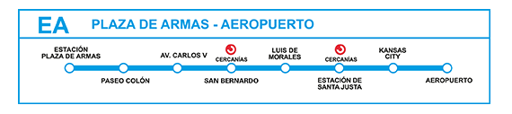
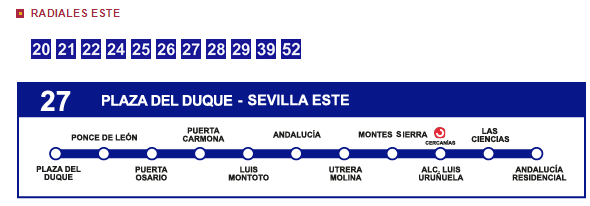

FIBES SEVILLA
Avenida de la Innovación S/N, en el barrio de Sevilla Este.
Por la zona se puede aparcar ya que es zona blanca. Sin embargo, los días laborables es complicado porque hay empresas por la zona. Aún así, disponemos de parking para los asistentes. El parking es de 300 plazas y está ubicado un poco más adelante de la entrada principal a FIBES. Con que digáis que vais a la CAS os dejarán aparcar.
Para los que vengáis en Avión, el aeropuerto no está muy lejos pero los taxistas tienen canon para ir a la ciudad. Existe un autobús especial que vale 4€ y lleva a la ciudad.
Para los que vengáis en tren hasta Santa Justa desde ahí podéis coger un cercanías que os lleva al Palacio de Congresos. El tren tarda 6 minutos y hay a todas horas salvo de 22.00 pm a 6 am.
Recordad que con el billete de AVE tenéis derecho a un billete de cercanías gratuito.
En cuanto a Taxis nos han ofrecido desde FIBES poder avisar 10 minutos antes de finalizar el evento para que en la puerta hay una cantidad importante de taxis y así evitar esperar. Si lo necesitáis comunicárnoslo y lo gestionamos.
En la puerta del Palacio de Congresos encontraréis una parada con la línea 27 que va al centro. La parada es "Alcalde Luis Uruñuela".
Para el autobús recomendamos la tarjeta de 1-3 días que ofrece Tussam (empresa de transportes de Sevilla)
{kind=link}
{kind=link}